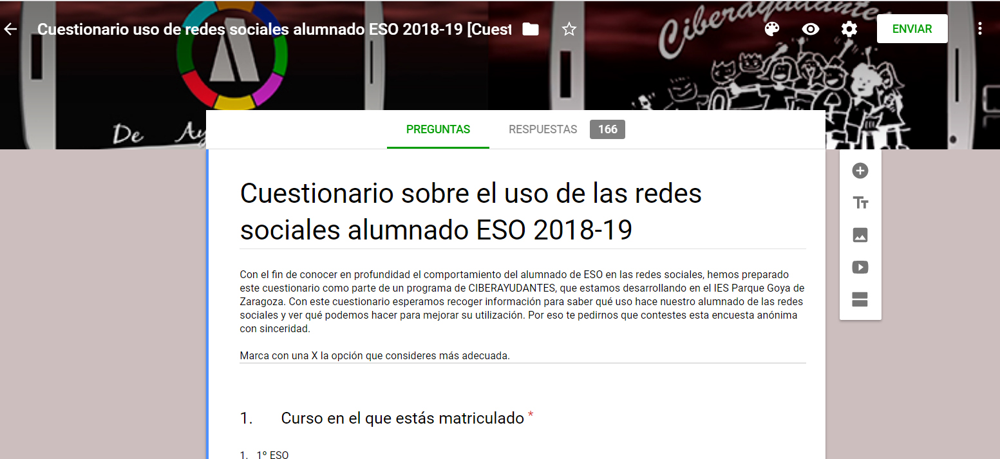
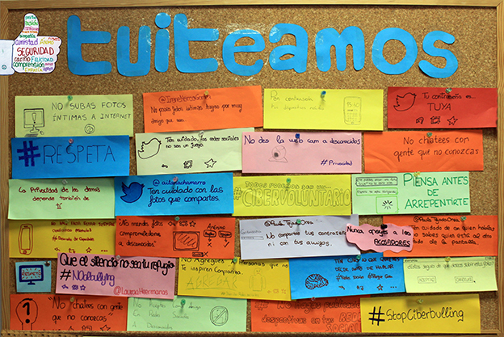
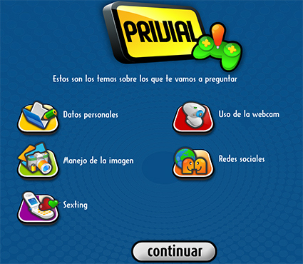
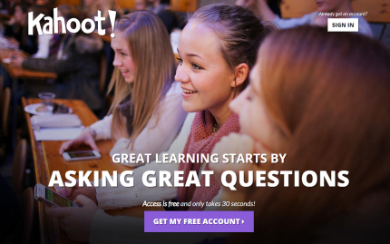
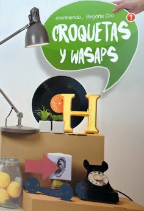

ACTIVIDADES REALIZADAS
1. Observamos. Observatorio sobre el uso de redes sociales en la ESO.
Cuestionario On-line elaborado por los alumnos de psicología sobre las conductas que se desarrollan a través de la red. Posteriormente serán los propios alumnos de secundaria quienes completarán el cuestionario en la sesión de tutoría.
El alumnado en grupos revisará los resultados globales del cuestionario y reflexionará sobre los usos de internet por un lado, y los riesgos y problemas que con mayor frecuencia han surgido. En gran grupo se pondrán en común las ideas aportadas por todos y se recogerán las conclusiones a las que han llegado.
Enlace cuestionario para profesores.
https://docs.google.com/forms/d/1i7iQ-yhICbgFV8oyW0TCz7FJMVjeuBkojY/viewform
Enlace últimos resultados del alumnado.
Enlace al cuestionario de alumnos.
https://alumnosayudantes.wordpress.com/cibervoluntariado/iniciativa-1/

2. Visionamos cortos y reflexionamos.
Esta iniciativa tiene como finalidad la de visualizar vídeos publicados en internet donde se aprecian diferentes usos de las redes sociales que realizan los adolescentes. Servirán de base para poder analizar y reflexionar sobre las prácticas que se hacen de ellas. Para ello utilizaremos distintas guías didácticas que hemos elaborado en el centro y que se pueden descargar desde nuestro blog.
VIDEO 1. ¿Anonimato? Una reunión con la profesora
VIDEO 2. ¿Tienes privacidad de verdad en las redes sociales?
VÍDEO 3. No lo digas por internet
VÍDEO 4. Ciberbullying.
VÍDEO 5. El cartero. Grooming.
VÍDEO 6. El peligro de las redes sociales.
VÍDEO 7. Seguridad de los niños en las redes sociales.
VÍDEO 8. Piénsalo antes de publicar algo.
VÍDEO 9. Antes de colgar tu imagen en la web.
Guía didáctica 1. https://alumnosayudantes.files.wordpress.com/2014/05/guia-didactica-uso-redes-sociales.pdf
Guía didáctica 2. https://alumnosayudantes.files.wordpress.com/2015/02/guc3ada-del-vc3addeo-peligros-de-las-redes-sociales-eso.pdf
3. Leemos para reflexionar.
La lectura de noticias, historias o cuentos relacionados con las redes sociales constituye una propuesta didáctica eficaz para sensibilizar a nuestro alumnado sobre el uso adecuado de las redes sociales. Además favorece la reflexión sobre algunas cuestiones que pueden afectar al uso inadecuado de las mismas.
A través del análisis de distintos tipos de textos se trabaja además la competencia en comunicación lingüística. Para ello se han diseñado dos tipos de actividades:
A) El comic de la Patrulla-K. https://alumnosayudantes.files.wordpress.com/2015/03/guc3ada-de-cc3b3mic-la-patrulla-k.pdf
B) Noticias de prensa.
https://alumnosayudantes.files.wordpress.com/2015/03/ciberacoso-a-travc3a9s-de-la-prensa.pdf CIBERACOSO A TRAVÉS DE LA PRENSA: Guía didáctica.
Imputan a dos chicas de 14 y 15 años de Tamarite por amenazar de muerte a otra menor a través de las redes. HERALDO 2018
Imputado un menor en Málaga por distribuir imágenes pornográficas suyas en una red social. SUR 2018
La edad ideal para tener el primer móvil es a partir de los 15 años. ABC 2018
Casi la mitad de los menores abusa de la tecnología. ABC 2018
Un millar de jóvenes daneses, imputados por compartir porno infantil en un chat. EL MUNDO 2018
Decálogo para el buen uso del móvil en niños y adolescentes. VALENCIA NOTICiAS 2017
Adolescentes: La vida en el móvil. EL MUNDO 2017
El 21% de los adolescentes españoles están en riesgo de ser adictos a Internet. EL PAIS 2013
La lección de privacidad de una profesora se hace viral. YAHOO 2013
4. Tuiteamos.
Con esta iniciativa simulando a la red social Twitter, queremos fomentar que se haga un uso adecuado de internet. Después de revisar los consejos y decálogos de buenas prácticas en redes sociales de las páginas web recomendadas y que aparecen debajo, los alumnos elaborarán un mural por clase, en el que aportarán mensajes propios en los que se describan normas que hagan de internet un entorno más seguro. Esta actividad podría realizarse paralelamente desde la red social EDMODO para subir los mensajes. Todos ellos serán publicados en nuestro blog. Desde este curso además contamos con una cuenta de Twitter: @iespgoya

 NETIQUETA. https://create.piktochart.com/output/29052800-netiqueta
NETIQUETA. https://create.piktochart.com/output/29052800-netiqueta
5. Jugamos.
A través de esta iniciativa queremos que nuestro alumnado participe de forma lúdica a partir de dos tipos de juegos.
El primero de ellos es el “Juego del PRIVIAL”. Se trata de un juego on line similar al Trivial sobre el uso de redes sociales que permitirá jugar a los alumnos por parejas o grupos de 4 alumnos y que tiene como finalidad cuidar la privacidad.

El segundo tipo de juego es el KAHOOT! “¿Y tú qué sabes sobre el uso de las redes sociales?” Se trata de un juego de preguntas y respuestas por equipos de cuatro, para realizar utilizando un smartphone o tablet. Buena parte de la preguntas han sido elaboradas por los ciberayudantes..

EDUCAPLAY. La ruleta de las redes sociales. https://es.educaplay.com/es/recursoseducativos/3555372/html5/la_ruleta_de_redes_sociales.htm#! QUIZIZZ: Privacidad e identidad digital https://quizizz.com/admin/quiz/5acddb8c4644110019a2b59f/privacidad-e-identidad-digital
Juego con FLIPQUIZ.
- Redes sociales 2. TIC 3. Internet
6. Creamos Cibercortos:
Diseño y elaboración de producciones audiovisuales propias. Algunos de los vídeos y animaciones que hemos realizados están publicados en Youtube y se muestran a continuación.
Proyecto Ciberayudantes:
Andrea y Diana dan su visión del programa.
Motivos por los que utilizan las rede sociales.
Escenificación en mediación en redes sociales
1,78 https://goanimate4schools.com/player/embed/08GoB3OI3AH4
Huella digital. https://goanimate4schools.com/player/embed/0OyyyEVbCp_c
“De ayudantes a ciberayudantes”:
Spot “Me gusta , no me gusta”.
Animación: “Buenas prácticas de internet”.
Animación: “Reglas de oro para uso de internet”
Spot: “Basta ya de machismos en whatsapp”.
7. Colaboramos con la Familias.
La implicación de las familias es fundamental. Por eso organizamos iniciativas que promuevan el uso adecuado de internet en el hogar. Algunas de ellas son las siguientes:
- Charla informativa a las familias sobre el uso de las redes sociales a cargo de la Policía Nacional dentro del Plan Director.
- Taller formativo sobre el uso de redes sociales para familias realizado por el grupo de convivencia con la participación de los ciberayudantes.
- Elaboración conjunta de folletos que recojan buenas prácticas de internet en familia”.
https://alumnosayudantes.files.wordpress.com/2015/03/triptico-uso-redes-sociales-padres2.pdf
- Grupo de lectura “Leer juntos” de padres y profesores en el que se propone la lectura de dos obras que tratan sobre el uso de redes sociales y adolescente: Pomelo y limón y Croquetas y whatsapp de la escritora zaragozana Begoña Oro. En ambas historias, leídas también en clase por los alumnos, las familias y los profesores se ponen en la piel de los adolescentes a través de la ficción. Esa visión tan cercana a la realidad les sirve como reflexión del uso que su hijo o alumno puede hacer de un blog o del whatsapp. Aunque es una tertulia literaria y no una escuela de familias, el hecho de que padres e hijos hayan leído las mismas novelas les proporciona la posibilidad de hablar del tema y así compartir lo que cada uno conoce del mismo. Además padres, profesores y alumnos asisten en diferentes momentos al encuentro con la autora, un motivo más de acercamiento y de complicidad de nuestra comunidad educativa y un posterior encuentro con la autora.

8. Creamos equipo de Ciberayudantes. Formación de los futuros ciberayudantes a través de la red social educativa Edmodo.
Uno de los aspectos clave del programa es la formación de un equipo de Ciberayudantes. Todos ellos tienen experiencia como alumnos ayudantes.
Queremos destacar que su rol tiene una doble función: Ayudar , asesorar, detectar situaciones de riesgo y mediar entre alumnos más pequeños por un lado. Y por otro lado informar directamente a través de charlas sobre temas de ciberseguridad, partiendo de la base que su incidencia entre el alumnado tiene mayor calado que si viene de los adultos.
Pero ¿Cuáles son los temas más importantes que se abordan en esta formación?
- PRIVACIDAD e IDENTIDAD DIGITAL : Datos personales, derecho a la imagen, configuración de perfil, contactos,..
- REPUTACIÓN DIGITAL Y RESPONSABILIDAD PENAL.
- REDES SOCIALES PAUTAS Y NORMAS DE CONDUCTA. NETIQUETA
Creemos necesaria la participación del alumnado en el desarrollo de este proyecto en colaboración con los tutores. Al menos han dedicado una sesión a modo de charla con el resto de los alumnos, para comentarles sobre algunos consejos, pautas y normas de utilización de las TIC y más concretamente en el uso de las redes sociales, tomando como referencia los contenidos relativos a la privacidad, uso de contraseñas, webcam, configuración de perfil, acceso a contenidos inadecuados, envío de comentarios e imágenes,…
Consultamos al correo de ciberayudantes@iesparquegoya.es. Espacio de consultas de los alumnos cuando tengan problemas con el uso de las redes sociales.
CASO PRÁCTICO. Gestión de la identidad. Mediación de ciberayudantes.
Ya hemos visto cómo gestionar la privacidad e identidad digital. A continuación vamos a verlo de una manera práctica, a través de algunos casos prácticos, que nos van a permitir prevenir, detectar y actuar ante un caso de este tipo.
Mario es un chico de 15 años que, como casi todos los adolescentes en la actualidad, mantiene una relación continua con las nuevas tecnologías: utiliza redes sociales de forma diaria para contactar con sus amigos y con grupos con los que se siente identificado, interactuando normalmente con el mundo virtual tanto con personas conocidas como desconocidas.
Actualmente cursa tercero de ESO y, aunque es buen estudiante, ha sido acusado por una compañera Marta por haber subido una foto a Instagram en la que ella aparecía fumando con sus amigos. Se siente molesta y ahora ella va vertiendo a través de las redes comentarios despectivos sobre Mario.
Al día siguiente de que se publicaran estos comentarios, Andrea, una alumna ciberayudante ha recibido dichos comentarios por un grupo de Whatsapp . Lo ha comentado con otra ciberayudante Diana y están dispuestas a mediar entre los dos.
Andrea, una buena amiga de Mario, habla con él en la hora del recreo.
-Mario tío, no veas la que has liado. ¡Se te ha ido la olla! Todo el mundo ha visto la foto de Marta fumando, y ya sabes que a ella no le gusta que se suban fotos suyas fumando. Además, acaba de dejarlo hace unos días. -Bah, me da igual… Ella siempre está chuleándose con el cigarrillo. Va de más guay. Y encima cuando se encuentra conmigo, me echa el humo a la cara. Así que no me arrepiento… -Quizá ahora no te arrepientas pero…¿no has pensado que esto puede traerte consecuencias? -Si, ya lo sé. Va subiendo comentarios sobre mi persona que nos son ciertos y si sigue así, pienso denunciarla. Al fin y al cabo yo solo he subido una foto suya fumando. -Claro, pero lo has hecho sin su consentimiento. ¿Quieres que hable con ella para ver qué solución podemos dar?
En el segundo recreo Andrea y Diana se reúnen con Mario y Marta, para tratar de llegar a un acuerdo.
-Hola chicos. Queríamos hablar un momento con vosotros porque hemos vista la foto que tú has subido y hemos leído los comentarios que Marta has compartido por whatsapp. -Estoy seguro de que escribiste todo aquello porque estabas enfadada pero tienes que comprender que no ha sido la mejor forma para demostrarlo. -Todo lo que publicamos en la red influye en la imagen que damos a los demás, en nuestra reputación… ¿eres consciente de que esto puede afectarte de forma negativa? -Puff… yo que se… estaba muy cabreado… tenía que haberme relajado antes de subir nada. -Si…ahora no podemos volver atrás, pero espero que puedas aprender de esta experiencia… Todo tiene consecuencias . -Y tú Marta, ¿crees que con los comentarios que has publicado es la mejor manera de resolver tu conflicto con Mario? -Supongo que los comentarios que he hecho no son muy afortunados, pero lo que ha hecho Mario no tiene desperdicio.
VER MÁS INFORMACIÓN ACTUALIZADA DESDE EL BLOG

Convivencia Segura en la red por Antonio Martínez Ramos y Jesús Prieto González bajo licencia Creative Commons Reconocimiento-NoComercial-CompartirIgual 4.0 Internacional License.